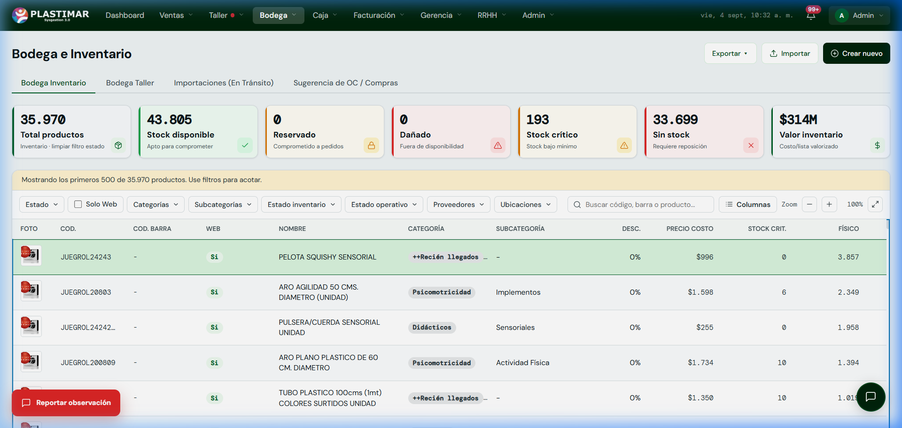

1. Tu Rol en el ERP Plastimar
Custodia de InventarioEl equipo de bodega custodia productos y materias primas de Plastimar. Su responsabilidad es mantener coherencia entre conteo físico, movimientos y disponibilidad; los totales y valorizaciones deben consultarse en el tablero vigente, no en cifras impresas del manual.
Tu Misión Principal
Garantizar que lo que dice el sistema coincida al 100% con lo que hay en estanterías. Registrar inmediatamente recepciones de proveedores, rebajas por mermas justificadas, entregas de telas a taller y el armado de pedidos para despacho.
2. Los 4 Estados del Stock en Plastimar
Conceptos ClavePara evitar vender mercadería inexistente o comprometer productos ya vendidos a otro cliente, el ERP distingue cuatro estados de stock en todo momento:
1. Stock Físico
Es el total real contado en pasillos, repisas y patio. Es la cantidad física presente en las bodegas de Plastimar.
2. Stock Disponible
Es lo que realmente se puede vender hoy. Equivale al Stock Físico menos las unidades que ya están comprometidas.
3. Stock Reservado
Unidades registradas como comprometidas. El disponible se calcula descontándolas junto con el stock dañado.
4. Stock Dañado / Merma
Productos con fallas de fábrica o roturas en manipulación. Se aíslan para que no salgan a la venta ni a reparto.
Regla de Oro de Bodega: Prohibido "digitar" stock a ciegas
En el ERP anterior se editaba la cantidad en la ficha del producto. En SisGestión 3.0 eso está bloqueado. Cada unidad que entra o sale debe quedar respaldada en el Kardex indicando: motivo, número de documento y usuario responsable.
3. Pantalla de Bodega e Inventario en el ERP
Tu Mesa de TrabajoAl ingresar a Bodega → Inventario verás el consolidado general de productos:

Explicación de las Pestañas de Bodega
Bodega Inventario (Catálogo General)
Muestra los productos terminados, didácticos e insumos generales. Puedes filtrar por categoría (Psicomotricidad, Espumas, Telas, Bases), ubicación física en estantería o proveedor.
Bodega Taller (Materias Primas en Tránsito)
Monitorea las materias primas entregadas al taller de confección, corte o carpintería. Permite asegurar que los materiales entregados correspondan a las ODTs activas.
Sugerencia de OC / Compras
El sistema muestra los productos que cumplen el criterio de stock crítico y genera una sugerencia para Compras. Antes de emitir una OC revisa demanda, reservas, daño, compras abiertas y plazo del proveedor.
4. Procedimientos Operativos Diarios
Paso a PasoA. Recepción de Mercadería de Proveedores
- Dirígete a Bodega → Stock Ingresos.
- En Ingreso Manual, selecciona proveedor, tipo y número del documento de respaldo. Si proviene de una OC, utiliza su flujo de recepción.
- Digita únicamente las cantidades recibidas físicamente y verifica producto, unidad y bodega.
- Si hay daño o diferencia, sepáralo y utiliza el movimiento/flujo autorizado; no contamines el disponible.
- Al confirmar, verifica el movimiento en historial/Kardex antes de reintentar.
B. Manejo de Telas y Rollos
En Bodega → Telas se administra el catálogo y sus movimientos de ingreso/egreso. Registra los datos disponibles en la pantalla:
- Indica cantidad, documento o referencia, ubicación y responsable cuando corresponda.
- No asumas control por rollo, partida, retazo u ODT si esos campos no están visibles.
- Reporta esa necesidad como Falta y conserva el control físico definido por la jefatura.
C. Preparación para Despacho (Picking y Packing)
En el Panel Picking verás las ventas que ya están listas para entrega:
- Retira los productos de las estanterías verificando el código interno.
- Pasa al Panel Packing para embalar los productos en cajas o bultos protegidos.
- El sistema genera la etiqueta del bulto y transfiere el pedido al área de Despacho para la emisión de la Guía de Despacho DTE.
¿Diferencia de conteo físico o código no reconocido?
Si al escanear un código de barras el producto no aparece o la cantidad física no coincide con el stock del sistema:
Usa de inmediato el botón flotante rojo [Reportar observación] abajo a la izquierda. Selecciona Falla o Falta, anota el código del producto y el equipo técnico revisará el historial del Kardex en el acto.
5. Checklist de control
Marcha Blanca- No editar stock de una ficha existente: usar Movimientos.
- Conteo físico, documento, proveedor, SKU y cantidad deben coincidir.
- Una recepción parcial registra sólo lo recibido.
- Antes de repetir un ingreso, buscarlo en historial.
- Picking y packing no pueden superar lo vendido.